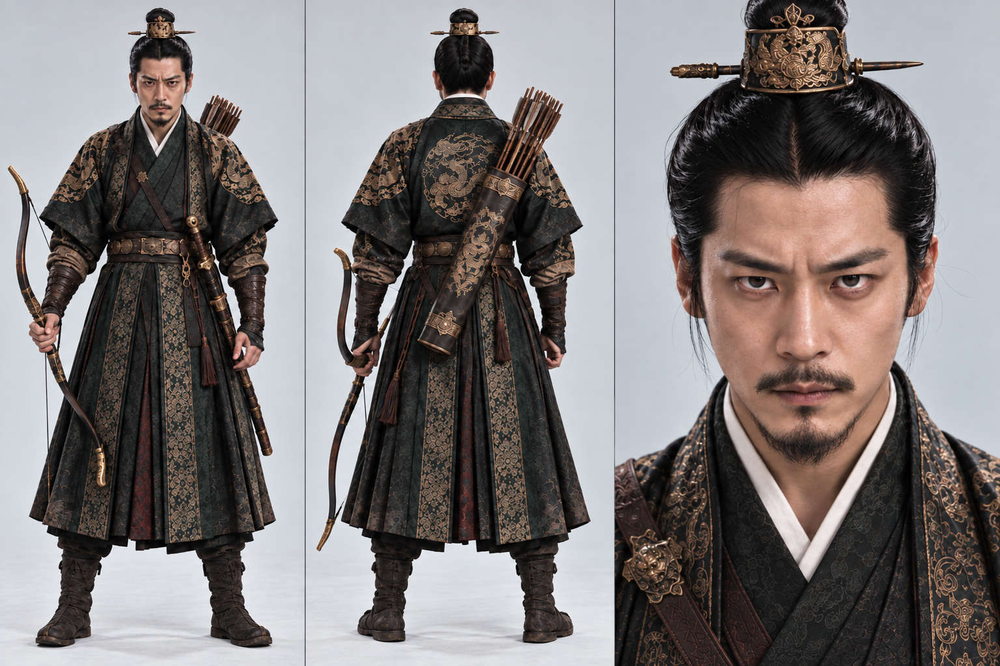
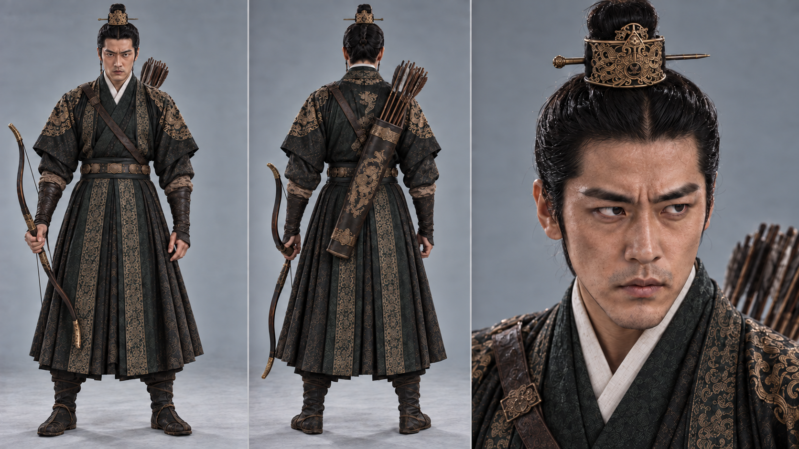
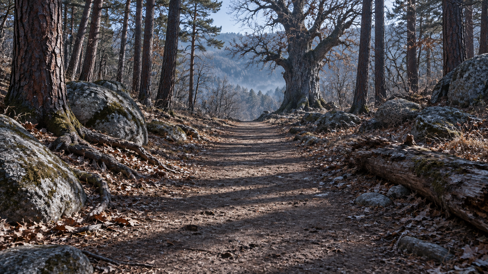
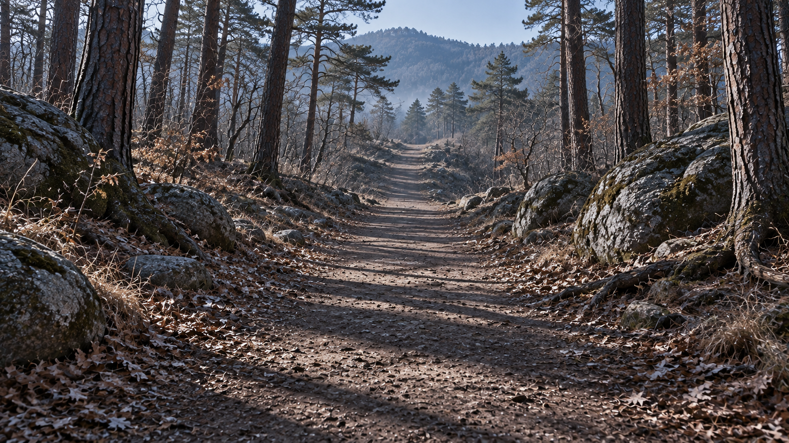

영상 생성 작업 스타트
블렌더 영상을 들고 시댄스 2.5로 비트4를 만들다
2026년 10월 1일–5일앞 글에서 블렌더로 비트4의 카메라 움직임과 화살의 속도를 정해 두었다. 이번 글은 그 영상을 들고 본격적으로 영상 생성에 들어간 첫 작업의 기록이다. 비트1도 후보였지만, 비트1은 시작과 끝 스틸 이미지를 박아서 만든 방식이라 이 이야기와 결이 다르다. 블렌더에서 이어지는 과정을 보여 주기에는 비트4가 맞았다.
10월 1일–5일: 106개를 생성하고, 60개를 편집에 활용하다
2026년 10월 1일부터 5일까지 시댄스 2.5로 총 106개의 영상을 생성했다. 그중 60개의 영상이 최종 4분짜리 트레일러 편집에 사용됐다. 이 60개가 모두 처음부터 끝까지 완벽한 OK 컷이었다는 뜻은 아니다. 전체로는 OK 컷이 아니어도, 쓸 수 있는 부분을 찾아 다빈치 리졸브에서 컷편집으로 최대한 살렸다.
영상 하나를 통째로 채택하거나 버리는 방식보다, 완성할 장면에 필요한 순간을 골라 이어 붙이는 판단이 중요했다. 부분적으로라도 활용할 수 있는 구간을 살려, 버리는 영상을 최소화하면서 최종 4분 영상을 만들었다. 이번 글의 비트4는 생성 설계를 보여 주는 대표 사례이고, 전체 트레일러는 이렇게 만든 재료를 감독이 고르고 편집한 결과다.
먼저, 이 작업의 원칙
프롬프트를 보기 전에, 이 작업 전체에 깔린 원칙 세 가지를 밝혀 둔다.
1. 편집은 감독이 다빈치 리졸브로 직접 한다. AI가 만드는 것은 완성된 영화가 아니라 컷이라는 재료다. 컷을 고르고 이어 붙이고, 속도와 색과 소리를 맞추는 일은 감독이 다빈치 리졸브에서 직접 한다.
2. 배경음악은 절대 넣지 않는다. 트레일러의 배경음악은 이미 미리 준비해 두었다. 그래서 영상 생성 단계에서는 음악이 한 조각이라도 섞이면 안 된다. 대신 효과음은 허용한다. 시위 소리, 화살이 날아가는 소리, 나무에 박히는 소리처럼 장면 안에서 실제로 나는 소리는 영상 속에서 함께 생성한다.
3. 영상 생성은 대부분 5~10초 안팎으로 한다. 짧은 컷을 이어 붙이는 편집 방식에 맞기도 하고, 생성 시간이 길어질수록 생길 수 있는 오류를 줄이기 위해서이기도 하다. 이번 비트4 컷도 5초다.
준비물: 영상 1개, 이미지 4장
시댄스 2.5에 넣은 레퍼런스는 다섯 개다.
| 이름표 | 내용 | 맡은 역할 |
|---|---|---|
| video_1 | 블렌더 프리비즈 영상 | 카메라 경로, 타이밍, 구도, 인물의 위치 |
| image_1 | 이각 캐릭터 시트 | 활을 쏘는 왕의 얼굴, 옷, 활 |
| image_2 | 이현 캐릭터 시트 | 길 끝에 서 있는 왕세제의 얼굴, 옷 |
| image_3 | 숲길 장소 이미지 (이현 쪽) | 길 끝에 선 거대한 고목이 있는 풍경 |
| image_4 | 숲길 장소 이미지 (이각 쪽) | 같은 길을 활 쏘는 쪽에서 본 풍경 |




사슴은 이미지 없이 글과 블렌더 영상 속 모형으로만 전했다. 장소 이미지가 두 장인 이유는 이 컷이 길의 양쪽 끝을 모두 지나기 때문이다.
프롬프트 전문
REFERENCE ROLES:
<<<video_1>>>= camera path, timing, framing and character positions ONLY. It is an untextured grey blockout: do NOT copy its grey capsules, colors or simple shapes.
<<<image_1>>>= the archer (the King). Exact face, costume and bow.
<<<image_2>>>= the young prince standing at the far end of the path. Exact face and costume.
<<<image_3>>>= the forest path seen toward the prince, with the huge old oak at the end of the path on its right edge.
<<<image_4>>>= the same path seen toward the archer.
Live-action Korean Joseon-dynasty historical film, photorealistic, one continuous unbroken shot following the camera path of the reference video exactly. Dry, crisp, cold daylight in a pine and oak forest.
0.0–1.3s: Close 3/4 front view from the King's right side. He draws the bow at full tension, eyes cold and shadowed, bowstring hand at left of frame, bow and arrowhead at right. Very slow push-in.
1.3–2.2s: Extreme slow motion release. The string snaps forward, the bow trembles, the arrow leaves the string and drifts left to right across frame, wobbling. The camera pans with the arrow and falls in directly behind it.
2.2–3.0s: The arrow accelerates down the forest path. It grazes past the head of a stag standing on the path, missing it by a hand's width; the stag flinches. The arrow ignores the stag and flies on.
3.0–3.8s: The camera stops and punches in. Slow motion again: the arrow flies straight at the prince's face. He steps half a pace aside and leans his whole upper body away. The arrow passes about 15 cm from his cheek and shoulder without touching his skin, hair or clothing.
3.8–4.1s: Back to real speed. The arrow slams deep into the trunk of the old oak behind him with a heavy impact and quivers.
4.1–5.0s: The prince turns to look back at the quivering arrow. Hold.
Sound: bowstring release, arrow whistle, wind past the face, deep thud into wood, stag's sharp breath, forest ambience. No background music, no score, no melody — sound effects and ambience only. No dialogue.
Avoid: arrow touching or piercing the prince's clothing or body, extra arrows, bow snapping, cuts or scene changes, grey blockout look, text, subtitles, modern objects.프롬프트의 각 파트 이해하기
이 프롬프트는 이야기를 들려주는 글이 아니라 명세서에 가깝다. 다섯 부분이 각자 다른 일을 한다.
1. 레퍼런스의 역할 (REFERENCE ROLES)
가장 먼저 한 일은 다섯 개의 레퍼런스에 각자 역할을 정해 준 것이다. 핵심은 블렌더 영상에 붙인 한 줄이다. 영상은 카메라 경로, 타이밍, 구도, 인물의 위치만 참고하게 하고, 회색 캡슐과 색, 단순한 형태는 따라 하지 말라고 못 박았다. 회색 모형의 모습이 결과에 새어 들어오는 걸 막으려는 장치다. 얼굴과 옷, 활은 이각과 이현의 시트 이미지가, 숲의 모습은 두 장소 이미지가 맡는다. 움직임은 영상에서, 모습은 이미지에서 가져오는 분업이다.
2. 룩의 선언
"실사 영화, 하나로 이어지는 한 컷, 레퍼런스 영상의 카메라 경로를 그대로 따를 것, 건조하고 차가운 낮의 소나무와 참나무 숲." 한 문단으로 영화의 질감과 원테이크, 빛의 분위기를 고정한다. 컷이 끊기지 않게 하는 문장이 여기 있다.
3. 시간표
5초를 여섯 구간으로 나눠 그림 스토리보드의 5, 6, 7번과 블렌더에서 정한 설계를 그대로 옮겼다.
| 구간 | 하는 일 |
|---|---|
| 0.0–1.3초 | 이각의 오른쪽 3/4 클로즈업. 활을 최대로 당긴 차갑고 그늘진 눈. 아주 느린 푸시인. 스토리보드 5번이다. |
| 1.3–2.2초 | 극단적 슬로모션으로 시위를 놓는다. 화살이 흔들리며 화면을 왼쪽에서 오른쪽으로 가로지르고, 카메라가 화살을 따라 돌아 바로 뒤에 붙는다. 카메라가 화살이 되는 원테이크의 이음새다. |
| 2.2–3.0초 | 화살이 가속해 길을 달린다. 길 위의 사슴 머리 곁을 손 한 뼘 차이로 스친다. 사슴은 움찔하지만 화살은 사슴을 무시하고 날아간다. 이 문장이 장면의 의도(사슴이 목표가 아니다)를 전한다. |
| 3.0–3.8초 | 카메라가 멈추고 파고든다. 다시 슬로모션. 화살이 얼굴로 날아오고 이현이 반 걸음 비껴 몸을 기울인다. 화살은 뺨과 어깨에서 약 15cm 떨어져 지나간다. 블렌더에서 정한 회피 간격을 숫자로 한 번 더 못 박았다. |
| 3.8–4.1초 | 속도가 돌아온다. 화살이 뒤의 고목에 깊이 꽂혀 떨린다. 스토리보드 7번이다. |
| 4.1–5.0초 | 이현이 돌아서 떨리는 화살을 본다. 정지. 편집할 때 쓸 여유이자 장면의 여운이다. |
느림, 빠름, 느림, 빠름의 리듬이 시간표에 들어 있다. 블렌더에서 정해 둔 속도의 변화를 글로도 한 번 더 적었다. 영상과 글이 같은 것을 다른 방식으로 말하게 해서, 하나가 놓치는 것을 다른 하나가 붙잡게 하려는 의도다.
4. 사운드
시위가 풀리는 소리, 화살의 휘파람, 얼굴 곁을 스치는 바람, 나무에 깊이 박히는 둔탁한 소리, 사슴의 날카로운 숨, 숲의 공기를 적었다. 이 작업의 원칙대로 효과음은 영상 안에서 만들게 한다. 소리마다 하는 일이 있다. 시위 소리는 긴장을, 휘파람은 속도를, 바람은 아슬아슬한 거리를, 둔탁한 소리는 충격의 무게를, 사슴의 숨은 놀람을, 숲의 공기는 공간을 만든다.
그리고 배경음악, 음악 일체, 대사는 금지했다. 앞에서 밝힌 대로 배경음악은 이미 준비해 두었기 때문에, 생성 단계에서 음악이 섞이면 편집에서 쓸 수 없게 된다. 그래서 음악을 막는 문장을 단호하게 적었다. 소리를 이렇게 구체적으로 적어 두면 모델이 엉뚱한 음악이나 소리를 끼워 넣을 틈도 줄어든다.
5. 피할 것 (Avoid)
미리 막아 둔 것들이다.
- 화살이 이현의 옷이나 몸에 닿거나 꿰뚫는 것. 이 장면의 긴장은 닿지 않는 아슬아슬함이다. 모델이 맞히는 그림으로 풀지 못하게 했다.
- 화살이 여러 개로 늘어나는 것. 한 발이어야 한다.
- 활이 부러지는 것. 시위를 놓는 순간의 물리적 오류를 막는다.
- 컷이나 장면 전환. 원테이크를 지킨다.
- 회색 블렌더의 모습. 영상 레퍼런스의 질감이 새어 나오는 것을 다시 한 번 막는다.
- 글자, 자막, 현대의 물건. 흔히 끼어드는 것들이다.
비트4 생성 결과
블렌더 프리비즈, 캐릭터 시트, 장소 이미지, 프롬프트를 함께 사용해 시댄스 2.5로 만든 5초짜리 결과 영상이다. 이 영상도 감독의 편집을 위한 컷 재료로 들어간다.
그록 영상은 오프닝 인트로에만 사용했다
테스트 영상 작업에서는 그록 AI도 활용했지만, 본 작업의 영상들과 이질감이 있어 트레일러 본편에는 사용할 수 없었다. 그록에서 생성한 영상은 트레일러 가장 앞에 들어가는 인트로 컷에만 활용했다. 아래의 ‘인트로 영상_마스터01’이 그록에서 생성한 인트로 영상이다.
정리
이 컷은 세 가지가 각자 다른 일을 맡아서 만들어졌다.
- 블렌더 영상이 움직임(카메라, 속도, 위치)을 맡았다.
- 시트와 장소 이미지가 모습(얼굴, 옷, 숲)을 맡았다.
- 프롬프트가 규칙(순서, 소리, 금지)을 맡았다.
하나에 모든 걸 맡기지 않은 것이 한 번에 의도대로 나온 이유라고 생각한다. 이렇게 만든 5초짜리 컷은 이제 다빈치 리졸브에서 다른 컷들과 이어 붙여, 미리 준비해 둔 음악 위에 올라간다.
전체 제작에서는 시댄스 2.5로 생성한 106개 중 60개의 영상을 편집에 활용했다. 60개에는 완전한 OK 컷뿐 아니라 부분적으로 쓸 수 있는 테이크도 포함된다. 생성된 영상 속에서 필요한 순간을 찾아 연결하고 최대한 살리는 편집으로, 버리는 영상을 줄이며 최종 4분짜리 트레일러를 완성했다.